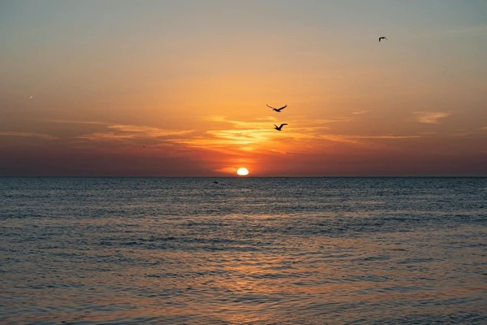

CHAPTER 1 - Introduction
The ocean had always been the lifeline for Juanjo and his coastal village, a haven of resources and stability passed down through generations. But now, what was once their ally is changing. Storms are hitting with unprecedented fury, and every day Juanjo’s nets come back emptier. For him, the sea he once knew is disappearing before his eyes.
What he is experiencing is not an isolated phenomenon, but a reality shared by millions of people around the world who depend on the oceans and, unwittingly, also face the devastating consequences of climate change.